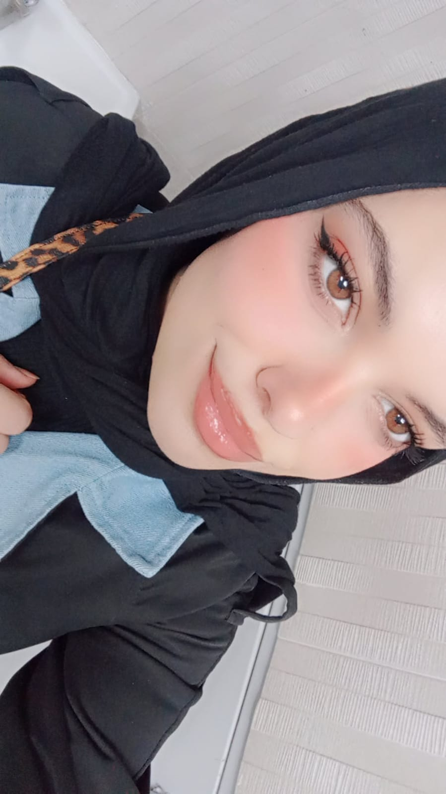

Favorite Languages & Tools
| Language / Tool | Link |
|---|---|
| Python | python.org |
| JavaScript | MDN JavaScript |
| Wireshark | wireshark.org |
| Nmap | nmap.org |
| Metasploit | metasploit.com |
| Docker | docker.com |

| Language / Tool | Link |
|---|---|
| Python | python.org |
| JavaScript | MDN JavaScript |
| Wireshark | wireshark.org |
| Nmap | nmap.org |
| Metasploit | metasploit.com |
| Docker | docker.com |
In four years I see myself working as a cybersecurity engineer specializing in incident response and digital investigation. I aspire to contribute to digital evidence investigations and develop automated tools that facilitate data collection and analysis. I also aim to obtain professional certifications and practical experience in penetration testing and cloud security. I may pursue graduate studies to deepen research into systems security and advanced threats.